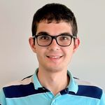
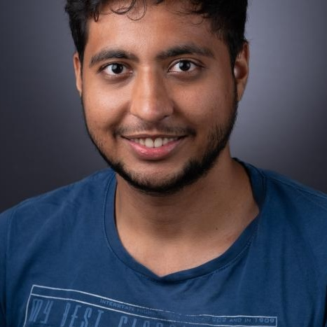
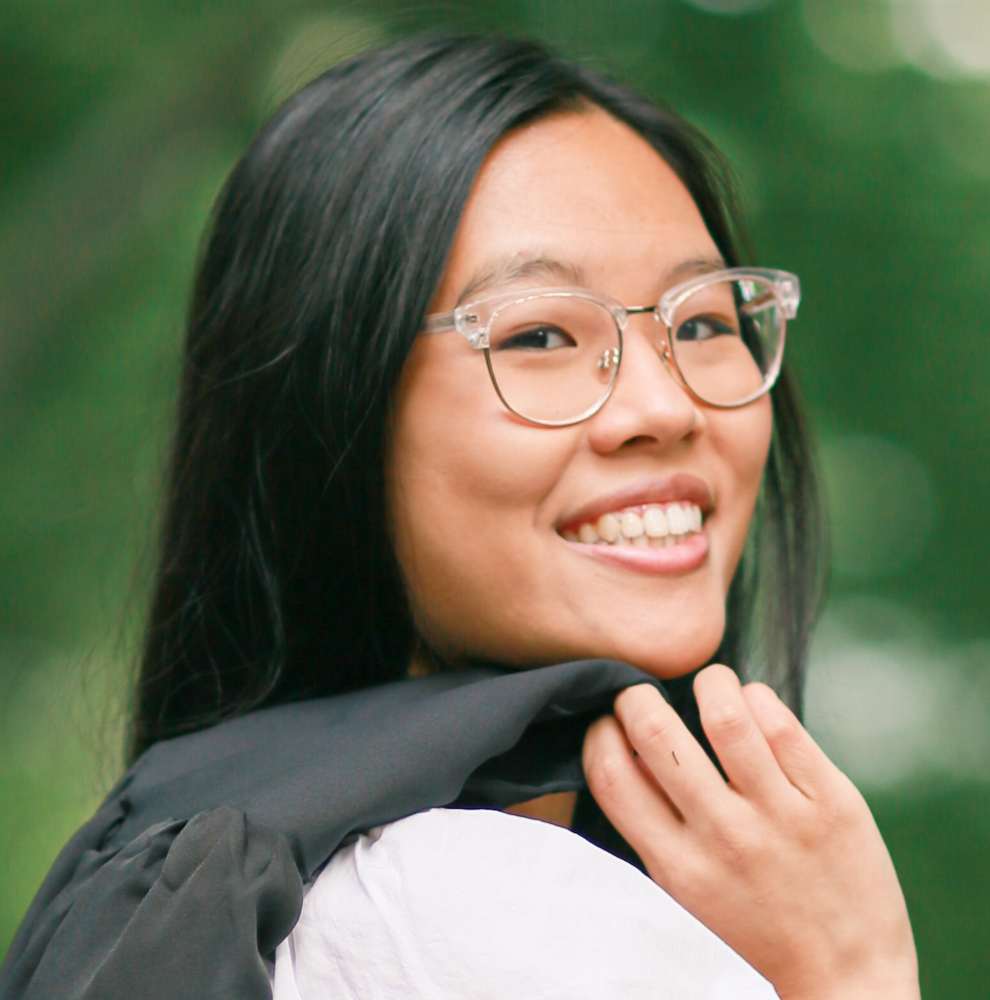

CS Theory Club
Undergraduates enjoying the foundations of theoretical computer science.
Wednesdays at 5:00 PM — CIS 450
5:00-5:30 PM: Reception/Social
5:30-6:30 PM: Talk
Pizza provided!
To join our email list, send the subject "join" to CS-THEORY-UGRAD-L-REQUEST@cornell.edu (instructions).
About Us
We are a community of Cornell students who are passionate
about theoretical computer science (TCS)! We hold weekly
meetings to discuss anything that sparks curiosity and gets
us thinking like theoretical computer scientists. This
semester, we are hosting weekly talks by professors,
graduate students, and undergraduates. Topics range from
presenting cutting-edge research and motivating open
problems in TCS to sharing personal stories and much more.
Come to any of our meetings! We warmly welcome anyone who is interested—undergraduate or graduate, from any area of study. We strive to make our meetings as accessible as possible. Because TCS requires a certain level of mathematical maturity, we expect experience with proofs and probability at the level of CS 2800 and recommend familiarity with algorithms at the level of CS 4820 (see: CS 4820 Lectures).
Come to any of our meetings! We warmly welcome anyone who is interested—undergraduate or graduate, from any area of study. We strive to make our meetings as accessible as possible. Because TCS requires a certain level of mathematical maturity, we expect experience with proofs and probability at the level of CS 2800 and recommend familiarity with algorithms at the level of CS 4820 (see: CS 4820 Lectures).
Topics We Explore
Algorithms
Design and analysis of efficient algorithms.
Complexity Theory
Understanding computational hardness.
Cryptography
Theoretical foundations of secure computation.
Quantum Computing
Power and limits of quantum algorithms.
Automata Theory
Languages and the structure of computation.
Schedule

Lattices in theoretical computer science and cryptography—some snippets from a >40-year history

My adventures with binary search

Title TBD

Title TBD

Title TBD

Title TBD

Title TBD

Title TBD

Title TBD
Title TBD